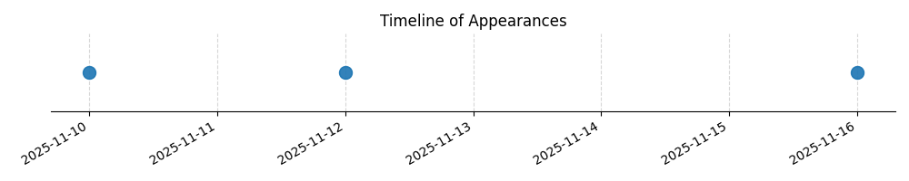

Kategorie: Letecké předpisy
Odpověď B je správná, protože předpisy letectví obecně vyžadují dohodu mezi veliteli letadel pro skupinový let a specifikují, že v řízeném vzdušném prostoru je nutné dodržovat pokyny a podmínky stanovené příslušnými úřady pro řízení letového provozu (ATS). Odpověď A je nesprávná, protože absence radiospojení by byla dalším problémem, ale ne primárním důvodem pro zákaz skupinového letu jako takového. Odpověď C je nesprávná, protože popírá nutnost dodržovat podmínky ATS v řízeném vzdušném prostoru, což je klíčové pro bezpečnost letového provozu.

| Datum výskytu |
|---|
| 2025-11-16 |
| 2025-11-12 |
| 2025-11-10 |